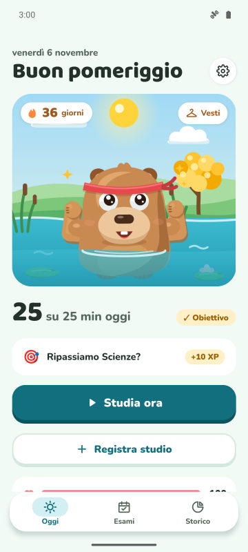
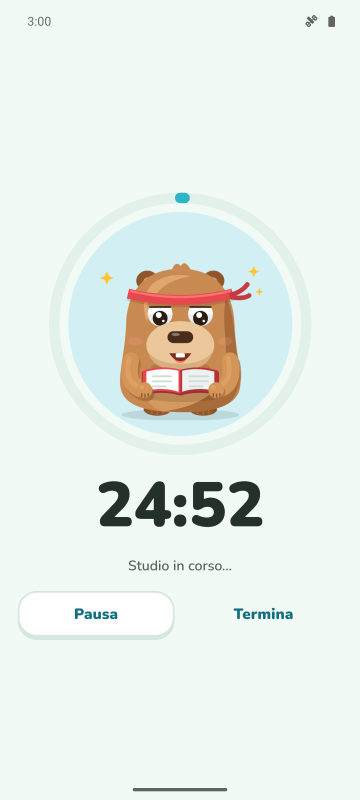
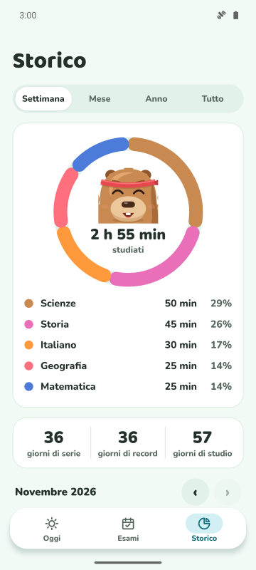
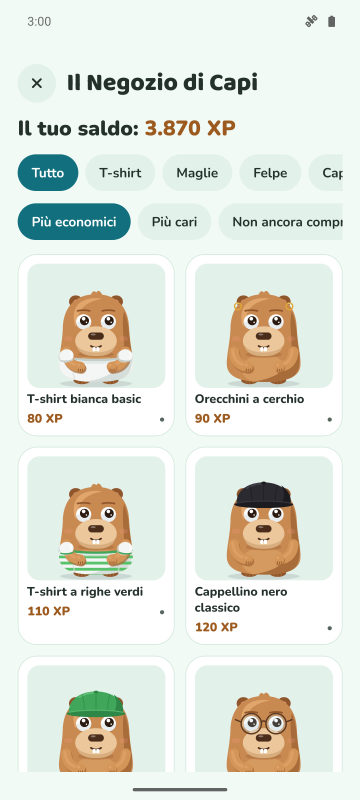

Obiettivo del giorno e serie
Scegli quanti minuti studiare al giorno. Obiettivo raggiunto: la serie cresce e il capibara festeggia.
Timer per la concentrazione, serie quotidiana e conto alla rovescia per gli esami. Più studi, più il tuo capibara diventa felice e forte.
Presto su Google Play
Gratis per Android. iPhone più avanti.

Scegli quanti minuti studiare al giorno. Obiettivo raggiunto: la serie cresce e il capibara festeggia.
Un timer con tre modalità. Nella Modalità Protetta il capibara appare sopra le app che vuoi evitare.
Aggiungi l'esame e guarda i giorni che mancano. Ogni giorno una missione con la materia che ha più bisogno di te.
Guadagna XP studiando e scambiali con vestiti e accessori. Festeggia anche le ricorrenze e il tuo compleanno.



Sì. L'app è gratuita con pubblicità. Premium (facoltativo) toglie la pubblicità e sblocca la Modalità Protetta, le notifiche silenziate durante lo studio e 3 scudi della serie al mese.
No. I tuoi dati restano sul telefono. Se vuoi, puoi sincronizzarli con il tuo Google Drive.
Sì. Aggiungi la data dell'esame, segui il conto alla rovescia e ricevi promemoria 7, 3 e 1 giorno prima.
In Forest pianti alberi. In CapyFoco ti prendi cura di un capibara che cresce con il tuo studio, con serie quotidiana, obiettivi e conto alla rovescia per gli esami in un'unica app.
Per ora solo Android. La versione per iPhone è nei piani.